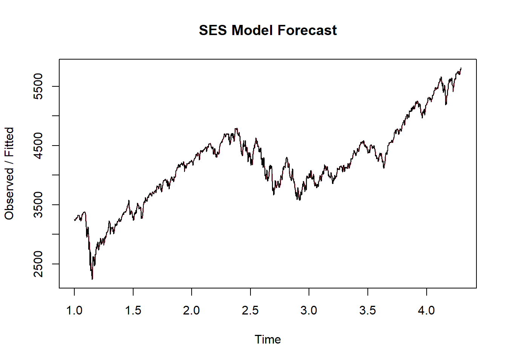

4 Introducción a modelos de pronóstico: Modelos de Suavizamiento Exponencial.
El estudio de los modelos de pronóstico en análisis de series de tiempo puede abordarse inicialmente desde la perspectiva de los modelos de Suavizamiento Exponencial, los cuales proveen una estructura intuitiva en el sentido de los componentes de la serie de tiempo analizada, al asumir como supuesto fundamental que los valores futuros de la serie de tiempo dependen de sus valores pasados, definiendo la contribución de estos al emplear ponderaciones exponencialmente decrecientes en los rezagos. Además, en su sofisticación en el modelo Holt-Winters, los modelos de Suavizamiento Exponencial también incluyen la influencia de los componentes de tendencia y estacionalidad.
En esta sección, haremos uso de las propiedades del análisis de Suavizamiento Exponencial al aplicar el Modelo Holt-Winters en sus versiones aditiva y multiplicativa a nuestra serie de tiempo S&P 500. Además, dada la frecuencia diaria de los datos, también evaluaremos la bondad de ajuste del modelo de Suavizamiento Exponencial Simple, el cual sólo considera la influencia ponderada del Nivel (valores pasados), y excluye la posible influencia de los efectos de Tendencia y Estacionalidad.
4.1 Modelo Holt-Winters aditivo
El modelo Holt-Winters aditivo modela la serie de tiempo en cuestión considerando la relación de Suavizamiento Exponencial y los efectos de Tendencia y Estacionalidad de manera aditiva, generando un esquema de modelación de bastante precisión en el ajuste con respecto a los valores observados de la serie. Esto puede evidenciarse en el siguiente gráfico, al denotar la similitud entre los valores reales de la serie (negro) y los valores ajustados provistos por el modelo (rojo).
# Additive Holt-Winters model
hw_additive <- HoltWinters(spx_ts, seasonal = "additive")
# View the summary of the model
summary(hw_additive)## Length Class Mode
## fitted 3352 mts numeric
## x 1203 ts numeric
## alpha 1 -none- numeric
## beta 1 -none- numeric
## gamma 1 -none- numeric
## coefficients 367 -none- numeric
## seasonal 1 -none- character
## SSE 1 -none- numeric
## call 3 -none- call# Access parameter values
alpha <- hw_additive$alpha
beta <- hw_additive$beta
gamma <- hw_additive$gamma
# Print the parameter values
cat("Parameter values for Additive Holt-Winters Model:\n")## Parameter values for Additive Holt-Winters Model:## Alpha (Level): 0.9345617## Beta (Trend): 0## Gamma (Seasonal): 1
Además, nótese el comportamiento de los parámetros por componentes de la serie, existiendo una alta contribución del componente de nivel (0,93), una contribución absoluta del componente estacional (1), y una contribución nula del componente de tendencia (0). Este resultado es esperado debido a la naturaleza de actualización diaria y la tendencia relativamente estática del índice S&P 500, y puede apreciarse a profundidad en el gráfico de descomposición del modelo.

Así, puede observarse que el comportamiento de la estimación del modelo posee una forma muy similar a la del componente de nivel, que la forma del componente de estacionalidad denota un comportamiento cíclico marcado en la serie modelada, y que, en promedio, la tendencia no varía.
A continuación, se presenta el gráfico de predicción a 30 días futuros de la serie de tiempo desde el modelo Holt-Winters aditivo.
library(forecast)
# Forecast using the additive model
forecast_additive <- forecast(hw_additive, h = 30) # Forecast for next 12 periods
plot(forecast_additive, main = "Additive Holt-Winters Forecast")
Además, la eficiencia en las predicciones del modelo se contrasta en función de la partición 80/20 de la serie en respectivos conjuntos de training y test. De tal forma que un ejercicio de validación cruzada del modelo ajustado en el conjunto de training en contraste con los datos del conjunto de test arroja las métricas de ajuste del modelo, presentadas a continuación.
# Define the training size (e.g., 80% of the data)
train_size <- floor(0.8 * length(spx_ts))
# Create training and test sets
train_set <- window(spx_ts, end = c(time(spx_ts)[train_size]))
test_set <- window(spx_ts, start = c(time(spx_ts)[train_size + 1]))
# Fit the additive Holt-Winters model on the training set
hw_additive_train <- HoltWinters(train_set, seasonal = "additive")
# Generate forecast for the test set period
hw_forecast1 <- forecast(hw_additive_train, h = length(test_set))
# Extract the forecasted values
predicted_values1 <- hw_forecast1$mean
# Calculate forecast errors
errors <- test_set - predicted_values1
# Mean Absolute Error (MAE)
MAE <- mean(abs(errors))
# Mean Absolute Percentage Error (MAPE)
MAPE <- mean(abs(errors / test_set)) * 100
# Root Mean Squared Error (RMSE)
RMSE <- sqrt(mean(errors^2))
# Display metrics
cat("Adjustment Metrics for Additive Holt-Winters Model on Test Set:\n")## Adjustment Metrics for Additive Holt-Winters Model on Test Set:## MAE: 661.1403## MAPE: 12.66671 %## RMSE: 686.4102En general, las métricas de interés de Error Porcentual Absoluto Medio (MAPE) y Error Cuadrático Medio (RMSE) muestran un error relativo de alrededor del 12%, y un error cuadrático de alrededor de 686, respectivamente. Este resultado indica un ajuste bondadoso en términos relativos y absolutos de las predicciones del modelo aditivo con respecto a los valores centrales provistos por el conjunto de test.
4.2 Modelo Holt-Winters Multiplicativo
Ahora, es posible aplicar la misma rutina de modelación empleando el modelo Holt-Winters multiplicativo, el cual considera la contribución de los componentes de Nivel, Tendencia y Estacionalidad de forma multiplicativa. Este modelo denota resultados similares, con la difirencia respecto del caso aditivo de una menor contribución del componente de Nivel al modelo (0,91).
# Multiplicative Holt-Winters model
hw_Multiplicative <- HoltWinters(spx_ts, seasonal = "multiplicative")
# View the summary of the model
summary(hw_Multiplicative)## Length Class Mode
## fitted 3352 mts numeric
## x 1203 ts numeric
## alpha 1 -none- numeric
## beta 1 -none- numeric
## gamma 1 -none- numeric
## coefficients 367 -none- numeric
## seasonal 1 -none- character
## SSE 1 -none- numeric
## call 3 -none- call# Access parameter values
alpha <- hw_Multiplicative$alpha
beta <- hw_Multiplicative$beta
gamma <- hw_Multiplicative$gamma
# Print the parameter values
cat("Parameter values for Multiplicative Holt-Winters Model:\n")## Parameter values for Multiplicative Holt-Winters Model:## Alpha (Level): 0.9193546## Beta (Trend): 0## Gamma (Seasonal): 1
También es posible observar la fuerte influencia del componente de nivel en el comportamiento de los valores ajustados, la persistencia del patrón de estacionalidad, y la nulidad en la influencia del componente de tendencia en el gráfico de descomposición.
# Plot the fitted values
plot(fitted(hw_Multiplicative), main = "Multiplicative Holt-Winters Forecast")
Al graficar la predicción a 30 días futuros del modelo, se observa un intervalo de predicción bastante similar al del caso aditivo.
library(forecast)
# Forecast using the Multiplicative model
forecast_Multiplicative <- forecast(hw_Multiplicative, h = 30) # Forecast for next 12 periods
plot(forecast_Multiplicative, main = "Multiplicative Holt-Winters Forecast")
Esto se refuerza con la similitud en las métricas de ajuste como producto del ejercicio de validación cruzada en el conjunto de Test, existiendo un muy ligero desmejoramiento tanto en MAPE como en RMSE con respecto al caso aditivo.
# Fit the multiplicative Holt-Winters model on the training set
hw_multiplicative_train <- HoltWinters(train_set, seasonal = "multiplicative")
# Generate forecast for the test set period
hw_forecast2 <- forecast(hw_multiplicative_train, h = length(test_set))
# Extract the forecasted values
predicted_values2 <- hw_forecast2$mean
# Calculate forecast errors
errors <- test_set - predicted_values2
# Mean Absolute Error (MAE)
MAE <- mean(abs(errors))
# Mean Absolute Percentage Error (MAPE)
MAPE <- mean(abs(errors / test_set)) * 100
# Root Mean Squared Error (RMSE)
RMSE <- sqrt(mean(errors^2))
# Display metrics
cat("Adjustment Metrics for Multiplicative Holt-Winters Model on Test Set:\n")## Adjustment Metrics for Multiplicative Holt-Winters Model on Test Set:## MAE: 667.4153## MAPE: 12.78964 %## RMSE: 692.97864.3 Suavizamiento exponencial simple
Finalmente, dada la naturaleza diaria de la serie de tiempo, es necesario explorar la aplicación de un modelo de Suavizamiento Exponencial Simple (SES) sobre el dataset. Este modelo no es más que una reducción del modelo general Holt-Winters, nulificando los componentes de Tendencia y Estacionalidad, y modelando la serie como estrictamente dependiente del componente de Nivel.
# SES model
hw_SES <- HoltWinters(spx_ts, beta = FALSE, gamma = FALSE)
# View the summary of the model
summary(hw_SES)## Length Class Mode
## fitted 2404 mts numeric
## x 1203 ts numeric
## alpha 1 -none- numeric
## beta 1 -none- logical
## gamma 1 -none- logical
## coefficients 1 -none- numeric
## seasonal 1 -none- character
## SSE 1 -none- numeric
## call 4 -none- call# Access parameter values
alpha <- hw_SES$alpha
beta <- hw_SES$beta
gamma <- hw_SES$gamma
# Print the parameter values
cat("Parameter values for SES Model:\n")## Parameter values for SES Model:## Alpha (Level): 0.9116522## Beta (Trend): FALSE## Gamma (Seasonal): FALSE
Nótese, que gráficamente, se percibe un mejor ajuste del modelo con respecto a las observaciones que en los casos de Holt-Winters aditivo y multiplicativo. Además, el parámetro de ponderación de nivel es casi igual al del caso multiplicativo.
El siguiente gráfico de descomposición denota la restricción de la estimación del modelo a ser exclusivamente dependiente del componente de nivel.

Nótese cómo, al ejecutar la predicción a 30 días futuros bajo el modelo SES, se obtiene una progresión horizontal de los valores predichos en función del último valor ajustado, siendo éste el valor central de un intervalo de predicción simétrico. Este resultado se da debido a la desaparición de la influencia de la tendencia y la estacionalidad en la predicción, este condicionamiento reduce en gran medida la eficiencia de este modelo, por lo cual también suele llamársele “predicción ingenua”.
library(forecast)
# Forecast using the SES model
forecast_SES <- forecast(hw_SES, h = 30) # Forecast for next 12 periods
plot(forecast_SES, main = "SES model Forecast")
Este resultado puede observarse puntualmente en el decrecimiento significativo de la eficiencia del modelo a partir de las métricas obtenidas en la validación cruzada: MAPE 19%, y RMSE 1081.
# Fit the SES model on the training set
hw_SES_train <- HoltWinters(train_set, beta = FALSE, gamma = FALSE)
# Generate forecast for the test set period
SES_forecast <- forecast(hw_SES_train, h = length(test_set))
# Extract the forecasted values
predicted_values3 <- SES_forecast$mean
# Calculate forecast errors
errors <- test_set - predicted_values3
# Mean Absolute Error (MAE)
MAE <- mean(abs(errors))
# Mean Absolute Percentage Error (MAPE)
MAPE <- mean(abs(errors / test_set)) * 100
# Root Mean Squared Error (RMSE)
RMSE <- sqrt(mean(errors^2))
# Display metrics
cat("Adjustment Metrics for SES Model on Test Set:\n")## Adjustment Metrics for SES Model on Test Set:## MAE: 1008.33## MAPE: 19.09173 %## RMSE: 1081.097En este sentido, dado el análisis realizado y las prepiedades exploradas en el marco del modelo Holt-Winters, resulta indispensable el considerar la influencia de los componentes de Tendencia y Estacionalidad en la serie de tiempo, de tal forma que, de tener que escoger entre las 3 opciones de modelación a disposición para la toma de decisiones en el mercado, el emplear predicciones desde el modelo Holt-Winters aditivo se muestra como la decisión correcta.